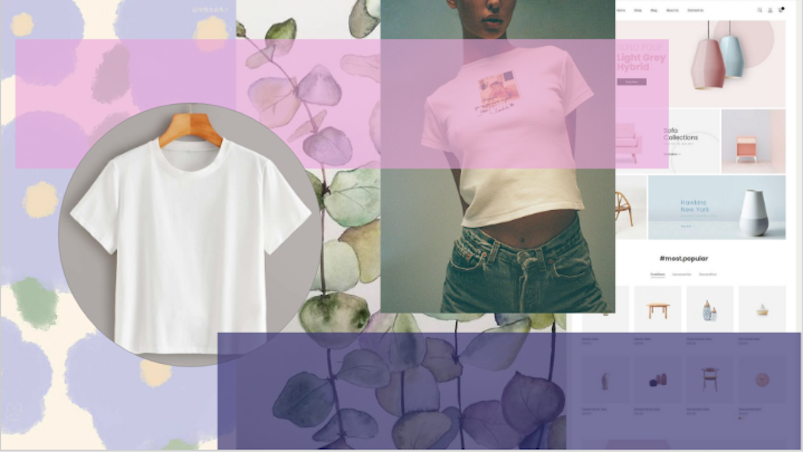
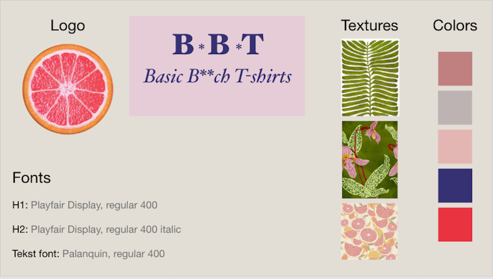

Grundlæggende UX
I tema 3 lærte vi en grundlæggende forståelse af samspillet mellem brugere og brugergrænseflader. Vi lærte at researche for at forstå brugeren, at ideudvikle og designe for at løse brugerens og virksomhedens behov.
Vi fik til opgave at lave en hjemmeside der solgte t-shirt og to valgfrie produkter, vi skulle derefter gå i gang med at finde ud af hvilket koncept vi ville arbejde med.
Research
Jeg lavede en desk research hvor jeg begyndte at undersøge hvilket marked der var for t-shirts til kvinder. Derefter var jeg ude og observere hvordan folks handle metoder og mønstre var, jeg interviewede min kollega for at gå mere i dybden omkring hendes tøj vaner og forbrug inde for t-shirts. Og til sidst lavede jeg en survey så jeg kunne komme bredere ud og finde ud af om interessen for skrædder syet t-shirts til kvinder var der.
Prototype
Jeg startede med at lave skitser af mit webside og derefter lavede jeg moodboard og styletile for at finde ud af hvilken stemning og stil jeg ville have på min hjemmeside. Derefter skulle vi lave en klikbar prototype inde i Adobe XD som vi skulle bruge i brugertesten.
 Brugertest
Vi lavede en test på vores klikbare prototype hvor vi blev delt op i observatør, facilitator og testperson. Observatøren, webdesigneren, havde klar gjort en række spørgsmål og mål som testpersonen skulle udføre. Observatøren måtte ikke sige noget men kun noterer hvad testpersonen gjorde og sagde, det var facilitatoren der styrede spørgsmålene. Det man kunne bruge denne test til var at finde ud af hvad der fungerer og ikke fungerer ved ens webside.
Klik for at se prototypePitch
Vi afsluttede forløbet med at lave en pitch af vores design proces af websitet og hvilke tanker vi havde gjordt om det.